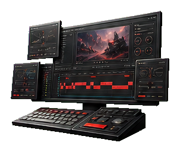
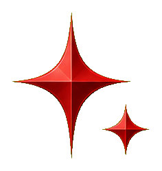
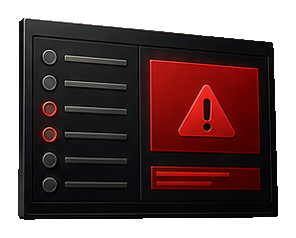
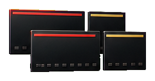
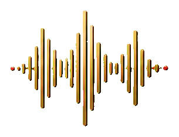
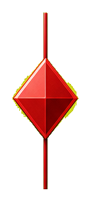
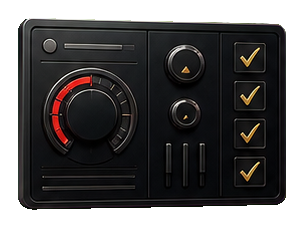
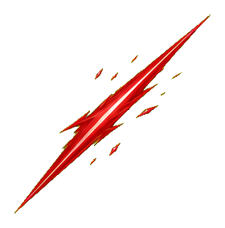

GAME THUMBNAIL2000目指してランクマッチ

SCENE 01 / PREMIERE EDITOR
クリックスch監修 / PC編集者向け
土日2日で、編集を
案件に出せる工程へ。
カット、BGM、SE、提出前チェック、添削、営業導線まで。 作品を作って終わらせず、OK後の案件紹介コミュニティまで見据える実践型プログラム。
PROJECT FILE
PremiereEditor_master.prproj
READY
01 / CUT
不要部分を切る
1H / 1CUT
02 / SOUND
BGMとSEを整える
AUDIO CHECK
03 / REVIEW
提出前に添削
REVIEW OK
04 / NEXT
案件導線へ進む
COMMUNITY
工程化
添削OK
土日受講
LINE確認
2DAYS
1H / 1CUT
REVIEW OK
COMMUNITY



SUPERVISED BY
クリックスch
SCENE 02 / QUICK JUDGE
まず、この講座で何が進むかを4つで確認。
細かい説明に入る前に、受講後の判断材料を先に見せる。
- 011時間ごとの工程カット、BGM、SE、提出前チェックまで順番に進める。
- 02作った動画を添削作品を作って終わらせず、OK基準まで確認する。
- 03OK後コミュニティ添削OK後、案件紹介コミュニティへの参加導線を案内。
- 04月額4,900円で継続卒業後は入会金カット、継続参加しやすい月額設計。
SCENE 03 / PHILOSOPHY
PHILOSOPHY
プレミアエディター開校への想い
はじめまして、プレミアエディターです。私たちは、動画編集を 「作れる」で終わらせないために、この講座を設計しています。 カット、BGM、SE、提出前チェック、添削、案件導線までを、 案件に出せる工程として一本のタイムラインにまとめます。
独学で止まる理由は、センス不足ではありません。
・何から直せばいいか分からない
・音の大きさや余白の基準がない
・添削OK後にどこへ進むかが見えない
こうした不安を、プレミアエディターでは
1時間ごとの工程と
添削OK基準で見える形にします。
お待たせしました。動画を作って終わりではなく、 卒業後コミュニティや LINEでの条件確認まで含めて、次に進む準備を整えます。
土日2日で、一気に整える。
月曜から、提出前チェックにかけられる編集者へ。
成果には個人差があります。料金、参加条件、コミュニティ導線はLINE説明会で確認してください。
SCENE 04 / DIAGNOSIS
案件に出せない理由を、提出前チェックで可視化する。
独学で止まりやすいのは、操作不足だけではなく、OK基準、音、第三者チェック、案件導線が分断されるところ。 プレミアエディターでは、止まりやすい原因を編集前のエラーチェックとして扱う。
PRE-SUBMIT CHECK
CHECK 01

QUALITY CHECK
案件に出せる基準が見えない。
カットやテロップは触れても、どこまで整えば提出できるのか判断できず、完成直前で止まってしまう。
01 / CUT INTO TASKS
1時間ごとに工程化
作業を分解し、迷う時間を減らす。
02 / REVIEW STANDARD
添削でOK基準へ
提出前の違和感を、直す順番まで見える形にする。
03 / NEXT ROUTE
OK後コミュニティへ
作品を作って終わらせず、案件紹介導線へ接続する。
SCENE 05 / STRENGTH
案件に出す前に、編集を3ゲートで締める。
プレミアエディターの強みは、学習内容を並べることではなく、提出できる状態まで工程を固定すること。
カット、音、添削、案件導線を別々に語らず、1本の編集プロジェクトとして通す。 初心者向けのやさしい説明より、提出前の判断基準を明確にする。
QUALITY GATE / BEFORE SUBMIT
GATE 01


TIME LOCK1時間ごとの工程設計
カット、テロップ、BGM、SE、添削を時間で区切り、何をいつ終えるかを曖昧にしない。
CUT
BGM
SE
REVIEW
COMMUNITY
SUBMIT READINESS
PROJECT RESULT
土日2日で編集工程を通し、添削OK後の案件導線まで見える状態へ。
SCENE 06 / SCHEDULE
1時間を1コマとして、編集工程を進める。
映画フィルムのコマを進めるように、DAY1は編集の基礎、DAY2は提出と案件導線へ。 カット、BGM、SE、添削までを時間割で可視化する。
NOW 01
DAY 1 / SETUP
ORIENTATION
編集環境、素材管理、完成形を確認して、2日間の編集プロジェクトを開く。
PROJECT / PREMIERE EDITOR COURSE
SEQUENCE 01
AUTO PLAY
DAY 1 / BUILD
DAY 2 / REVIEW
10:00
11:00
12:00
13:50
14:50
15:50
16:50
17:40
10:00
11:00
12:50
13:50
14:50
15:50
16:50
17:40

CUT-IN / LINE CHECK
この工程で進めそうか、説明会で先に確認。
必要PC環境、日程、添削条件、コミュニティ参加条件をLINEで確認できます。
LINEで確認するSCENE 07 / REVIEW
作った動画を添削。OKが出たら、次の導線へ。
講座内で制作した課題動画を提出し、カット、テロップ、BGM/SE、書き出し形式を確認。 OK基準を満たした受講者は、案件紹介コミュニティへの参加導線を案内する。
- 01課題動画を制作
- 02講師/運営が添削
- 03修正して再提出
- 04OK後コミュニティへ
WORKS TAPE / 実績一覧
サムネイル実績を、編集テープに乗せて流す。
まずは画像サンプルで演出確認。将来は同じカード枠をYouTube埋め込みへ差し替え、 作品実績として見せられる構造にしておく。

SPLATOONXP更新行くぞ!!!

STREAMみんなでホラーゲーム

LIVE同時視聴配信

MARIOKART世界1元気マリカ

BIRTHDAY LIVE飲酒誕生日配信

MEMBERSSpringFest メン限

EDITINGshortを作るには
WORKS SELECT / 案2
流れる実績から、1本を編集モニターへ読み込む。
テープで一覧性を出しつつ、気になる実績は大きく見せる。 本番ではこのメイン画面をYouTube埋め込みへ差し替えられる。
GAME THUMBNAIL
2000目指してランクマッチ
大会感のある背景、キャラクター、巨大テキストで、配信前に期待値を作るサムネイル。
SCENE 08 / PRESENT
受講して終わりにしない。編集者になるための支給セット。
講座中に学ぶ工程だけでなく、受講後に見返す教材、営業準備、OK後のコミュニティ導線まで用意。 4つの装備として、編集スタジオの棚に並べる。
PRESENT 01
営業サポート
提案文、応募時の見せ方、案件へ進む前の準備を整理。
SALES KIT
PRESENT 02
オンライン学習で復習
カット、音、テロップ、提出前チェックを受講後も見返せる。
REVIEW DECK
PRESENT 03
案件紹介コミュニティへの参加権利
添削OK後、案件紹介コミュニティへ進むための導線を案内。
COMMUNITY PASS
PRESENT 04
土日に受講
平日に仕事がある人でも、2日間で集中して工程を進めやすい。
WEEKEND SLOT添削OK後は、卒業後コミュニティの入会金カット対象として案内。条件はLINE説明会で確認。
SCENE 09 / PLAN
料金は、書き出し前の最終確認みたいに見せる。
迷わせる価格表ではなく、卒業後に何が続き、何がカットされ、何をLINEで確認するのかを 編集ソフトのエクスポート画面のように整理する。
月額4,900円
卒業後コミュニティの継続費
入会金CUT
卒業条件を満たした人向けに案内
- 01
講座本体と参加条件はLINE説明会で確認
- 02
添削OK後、案件紹介コミュニティの参加導線へ
- 03
必要な人だけアフターサポートを追加
EXPORT SETTINGS / PRICE CHECK
PREMIERE EDITOR

PRICE CHECK READY
SCENE 09 / 01:36
COMMUNITY MONTHLY
月額4,900円
添削OK後、参加条件を満たした卒業生向けに案内。

入会金 CUT GRADUATE PASS
V1
講座本体
LINEで確認
A1
アフターサポート
10,000円
CAL
受講日程
土日対応講座本体価格、参加条件、アフターサポートの期間はLINE説明会で最終確認。
SCENE 10 / VOICE & RECOMMENDED
受講後の判断材料を、試写レビューのように並べる。
編集工程、添削、コミュニティ導線まで。受講者がどこに価値を感じるかを、短いレビューと監修コメントで確認できる構成にする。
PREVIEW SCREENING / REVIEW DECK
VOICE 01
NOW CHECKING
PROCESS
独学で曖昧だった基準が、提出できる工程になった。
カット、音、テロップ、提出前チェックまで順番に進むので、何を直せばいいかが見えやすい。
工程で進行
添削OK基準
卒業後コミュニティ
LINEで条件確認
FINAL SCENE / LINE CHECK
まずは、自分のPC環境と参加条件を確認してください。
必要PC環境、受講日程、料金、コミュニティ参加条件、アフターサポート内容をLINE説明会で確認。
SCENE 11 / Q&A
Q&A
ANSWER PLAYBACK
受講は可能です。ただし、PC操作と編集ソフトの準備が必要です。説明会で必要環境を確認してください。
ANSWER PLAYBACK
案件獲得保証ではありません。講座では、編集工程、提出用作品、営業準備、コミュニティ導線を整えます。
ANSWER PLAYBACK
はい。講座内で作った動画を添削し、修正点を確認します。
ANSWER PLAYBACK
月額4,900円を予定しています。卒業者は入会金カットの予定です。
ANSWER PLAYBACK
希望者向けに10,000円のアフターサポートを用意する想定です。期間と内容は本番前に確定します。